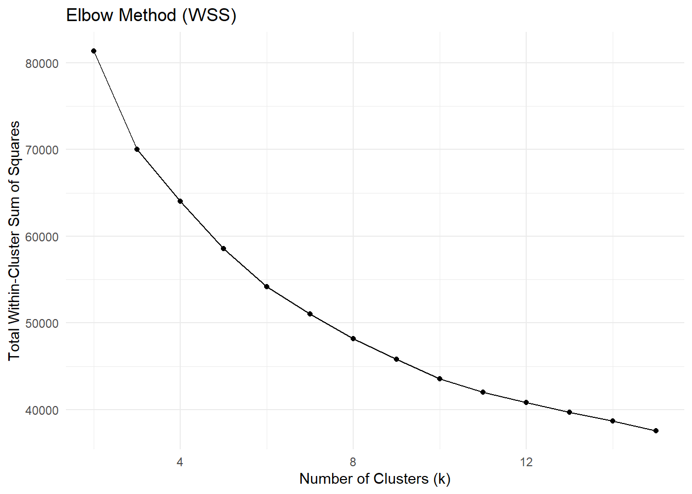
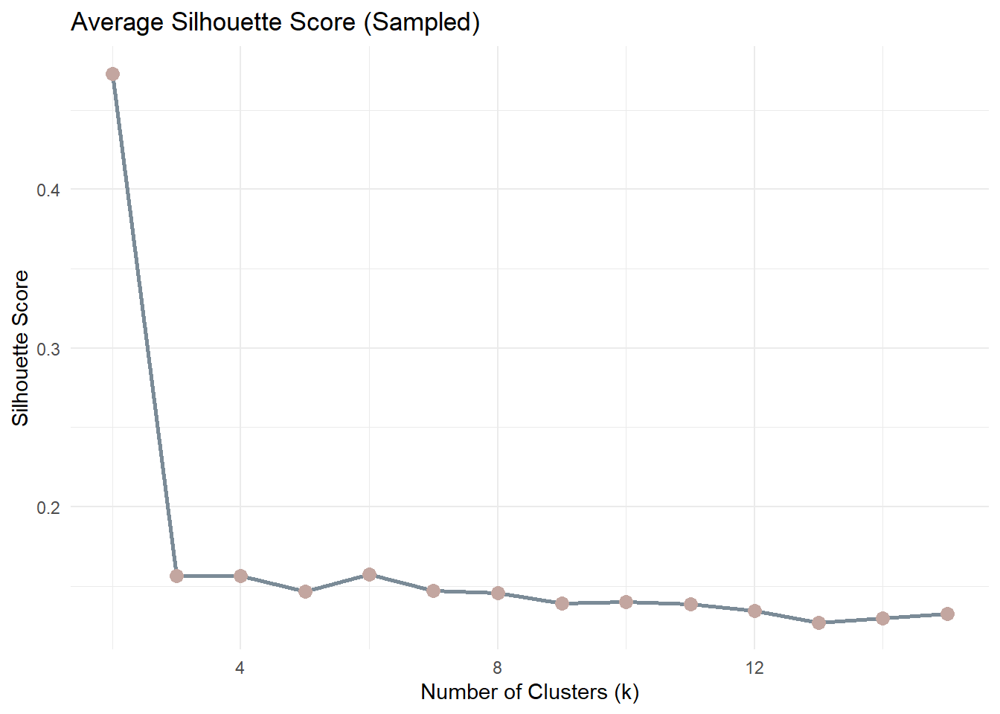
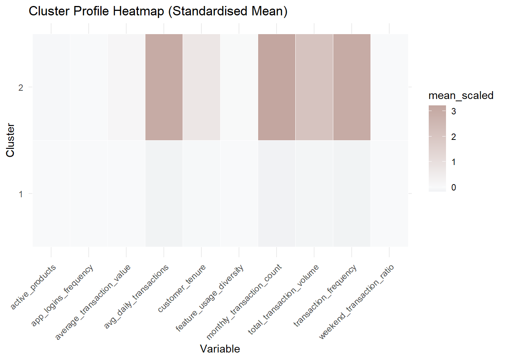
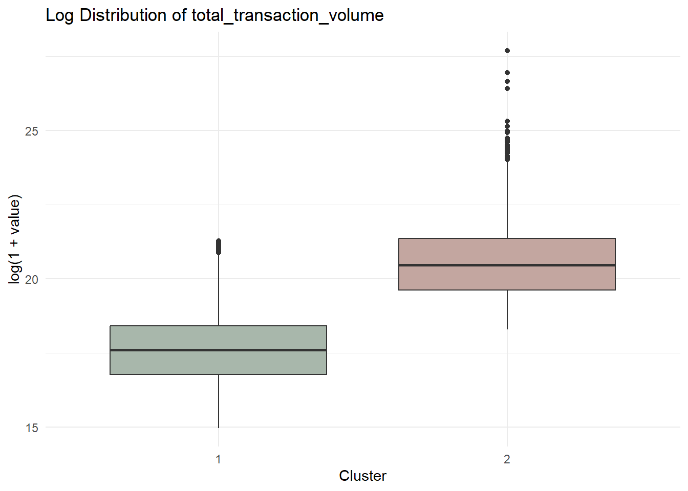
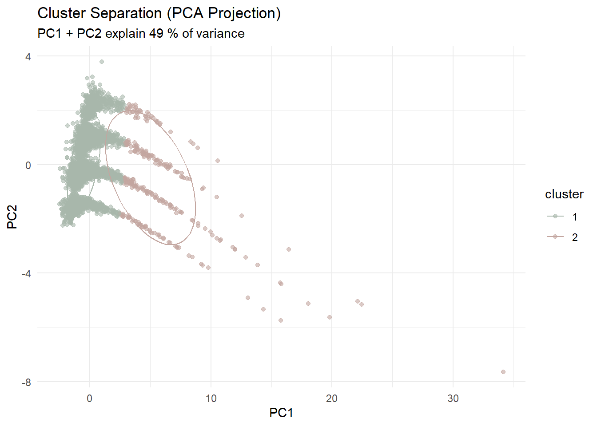

pacman::p_load(
pacman, tidyverse, lubridate, cluster, factoextra, DT, shiny, plotly,e1071
)Take-home Exercise 2 – Clustering Module Prototype
Overview
This take-home exercise develops a prototype of the Customer Segmentation Module for the final Shiny application.
The dataset is already structured at the customer level, meaning each row represents a unique customer with demographic, behavioural, engagement, and satisfaction attributes. Therefore, no transaction-level aggregation is required.
The purpose of this prototype is to:
Feature engineering from transaction-level data
Feasibility of k-means clustering
Interactive parameters (k and variable selection)
Visual outputs for cluster exploration
1 Getting Started
1.1 Installing and loading the packages
Before performing analysis, the required packages are loaded. These packages support data manipulation, clustering evaluation, and visualisation.
| Library | Description |
|---|---|
| pacman | Install and load multiple packages in one command. |
| tidyverse | Data wrangling + ggplot2 visualization workflow . |
| lubridate | Date parsing and date arithmetic. |
| cluster | Clustering evaluation utilities (e.g., silhouette). |
| factoextra | Helper functions for visualising clusters and PCA results . |
| DT | Interactive tables for cluster profile summaries in Shiny. |
| shiny | UI and server framework for integrating this module into the final Shiny app. |
| plotly | Interactive plotting for cluster maps and exploratory visuals. |
| e1071 | Skewness computation. |
2 Data Preparation
2.1 Loading the Dataset
We first import the customer-level dataset and inspect its structure to confirm variable types.
customers <- read_csv("data/customer_data.csv")
glimpse(customers)Rows: 48,723
Columns: 54
$ customer_id <dbl> 93716481, 49020929, 52690950, 23199751, 619…
$ age <dbl> 44, 44, 45, 45, 44, 45, 44, 44, 45, 44, 44,…
$ gender <chr> "Male", "Male", "Male", "Male", "Female", "…
$ location <chr> "Pereira, Risaralda", "Cali, Valle del Cauc…
$ income_bracket <chr> "Very High", "Medium", "High", "High", "Med…
$ occupation <chr> "Engineer", "Construction Worker", "Constru…
$ education_level <chr> "Master", "Bachelor", "Bachelor", "High Sch…
$ marital_status <chr> "Married", "Married", "Married", "Single", …
$ household_size <dbl> 5, 2, 4, 2, 3, 4, 4, 3, 1, 3, 5, 3, 3, 7, 3…
$ acquisition_channel <chr> "Partnership", "Paid Ad", "Paid Ad", "Refer…
$ customer_segment <chr> "occasional", "regular", "inactive", "inact…
$ savings_account <lgl> TRUE, TRUE, TRUE, TRUE, TRUE, TRUE, TRUE, T…
$ credit_card <lgl> TRUE, FALSE, FALSE, FALSE, TRUE, TRUE, TRUE…
$ personal_loan <lgl> FALSE, FALSE, FALSE, FALSE, FALSE, FALSE, F…
$ investment_account <lgl> FALSE, FALSE, TRUE, TRUE, FALSE, TRUE, FALS…
$ insurance_product <lgl> TRUE, FALSE, TRUE, FALSE, FALSE, FALSE, FAL…
$ active_products <dbl> 1, 5, 3, 2, 1, 1, 1, 4, 2, 3, 1, 5, 3, 1, 1…
$ app_logins_frequency <dbl> 15, 30, 4, 15, 19, 15, 44, 22, 7, 11, 7, 30…
$ feature_usage_diversity <dbl> 3, 0, 4, 4, 1, 4, 6, 1, 1, 6, 3, 1, 2, 1, 3…
$ bill_payment_user <lgl> FALSE, TRUE, TRUE, TRUE, FALSE, TRUE, TRUE,…
$ auto_savings_enabled <lgl> FALSE, FALSE, FALSE, FALSE, FALSE, TRUE, FA…
$ credit_utilization_ratio <dbl> 0.17871029, NA, NA, NA, 0.40360553, 0.07786…
$ international_transactions <dbl> 1, 1, 1, 1, 0, 0, 0, 0, 0, 1, 0, 0, 0, 1, 0…
$ failed_transactions <dbl> 0, 0, 0, 1, 0, 0, 1, 1, 0, 0, 1, 0, 0, 1, 0…
$ tx_count <dbl> 76, 10, 10, 23, 18, 15, 24, 45, 134, 13, 18…
$ avg_tx_value <dbl> 1679872.4, 5445810.0, 640335.0, 660180.4, 1…
$ total_tx_volume <dbl> 127670300, 54458100, 6403350, 15184150, 262…
$ first_tx <date> 2023-01-05, 2023-02-05, 2023-01-31, 2023-0…
$ last_tx <date> 2023-12-25, 2023-12-20, 2023-12-12, 2023-1…
$ base_satisfaction <dbl> 9.213372, 6.073093, 8.198643, 7.529577, 6.6…
$ tx_satisfaction <dbl> 0.380, 0.050, 0.050, 0.115, 0.090, 0.075, 0…
$ product_satisfaction <dbl> 0.6, 0.2, 0.6, 0.4, 0.4, 0.6, 0.4, 0.4, 0.6…
$ satisfaction_score <dbl> 5, 3, 4, 4, 3, 4, 4, 4, 5, 4, 4, 5, 4, 3, 4…
$ nps_score <dbl> -7, -46, -29, -31, -47, -29, -34, -36, -4, …
$ last_survey_date <date> 2023-12-16, 2023-05-05, 2023-11-16, 2023-0…
$ support_tickets_count <dbl> 1, 1, 0, 2, 2, 1, 1, 0, 2, 0, 0, 2, 3, 1, 0…
$ resolved_tickets_ratio <dbl> 0.0000000, 1.0000000, 0.0000000, 0.5000000,…
$ app_store_rating <dbl> 3.5, 4.0, 5.0, 4.5, 4.0, 4.0, 5.0, 4.5, 4.5…
$ feedback_sentiment <chr> "Neutral", "Positive", "Positive", "Positiv…
$ feature_requests <chr> "Budgeting tools", NA, NA, "Cryptocurrency …
$ complaint_topics <chr> NA, NA, NA, NA, "App performance", NA, NA, …
$ clv_segment <chr> "Gold", "Bronze", "Gold", "Bronze", "Gold",…
$ monthly_transaction_count <dbl> 1.428571, 1.571429, 2.500000, 1.555556, 2.1…
$ average_transaction_value <dbl> 6054025.0, 2127413.6, 3575915.0, 1513353.6,…
$ total_transaction_volume <dbl> 60540250, 23401550, 35759150, 21186950, 116…
$ transaction_frequency <dbl> 0.03076923, 0.03293413, 0.05000000, 0.04778…
$ last_transaction_date <date> 2023-12-05, 2023-12-18, 2023-10-27, 2023-1…
$ preferred_transaction_type <chr> "Transfer", "Transfer", "Transfer", "Transf…
$ first_transaction_date <date> 2023-01-05, 2023-02-05, 2023-01-31, 2023-0…
$ weekend_transaction_ratio <dbl> 0.30000000, 0.18181818, 0.30000000, 0.14285…
$ avg_daily_transactions <dbl> 0.03076923, 0.03293413, 0.05000000, 0.04778…
$ customer_tenure <dbl> 11.633333, 11.500000, 8.766667, 10.733333, …
$ churn_probability <dbl> 0.3622688, 0.1817896, 0.3212651, 0.3366287,…
$ customer_lifetime_value <dbl> 312414808, 167022286, 19403711, 35978105, 3…2.2 Data Integrity Checks
2.2.1 Missing Values
Missing values may distort clustering results. Therefore, we inspect NA counts.
customers %>%
summarise(across(everything(), ~sum(is.na(.))))# A tibble: 1 × 54
customer_id age gender location income_bracket occupation education_level
<int> <int> <int> <int> <int> <int> <int>
1 0 0 0 0 0 0 0
# ℹ 47 more variables: marital_status <int>, household_size <int>,
# acquisition_channel <int>, customer_segment <int>, savings_account <int>,
# credit_card <int>, personal_loan <int>, investment_account <int>,
# insurance_product <int>, active_products <int>, app_logins_frequency <int>,
# feature_usage_diversity <int>, bill_payment_user <int>,
# auto_savings_enabled <int>, credit_utilization_ratio <int>,
# international_transactions <int>, failed_transactions <int>, …The missing value inspection shows that all 54 variables contain zero missing entries.
This indicates that the dataset is fully observed at the customer level. No imputation or row removal procedures are required.
2.2.2 Duplicate Records
Since clustering is performed at the customer level, duplicate rows would bias the segmentation.
sum(duplicated(customers))[1] 0The result indicates that no duplicate rows exist, confirming dataset integrity.
3 Variable Selection for Clustering
Clustering should rely on behavioural and engagement signals, rather than identifiers or pre-existing labels.
The following variables are selected:
cluster_vars <- c(
"monthly_transaction_count",
"average_transaction_value",
"total_transaction_volume",
"transaction_frequency",
"avg_daily_transactions",
"app_logins_frequency",
"feature_usage_diversity",
"active_products",
"weekend_transaction_ratio",
"customer_tenure"
)These variables capture:
- Transaction intensity
- Spending behaviour
- App engagement
- Product breadth
- Customer tenure
4 Preprocessing
Clustering algorithms such as K-means rely on Euclidean distance. Therefore, proper preprocessing is essential to:
- Prevent scale dominance
- Reduce skewness effects
- Ensure fair distance computation
The preprocessing pipeline follows three steps:
- Preserve original data for interpretation
- Apply log transformation to skewed variables
- Standardise variables before clustering
4.1 Create Original Dataset
Before transformation, we preserve the original numeric values. This dataset will later be used to compute cluster profile summaries.
df_original <- customers %>%
dplyr::select(customer_id, dplyr::all_of(cluster_vars)) %>%
dplyr::mutate(
dplyr::across(
dplyr::all_of(cluster_vars),
~ readr::parse_number(as.character(.))
)
)
# Audit NA introduced by parsing
na_after_parse <- df_original %>%
dplyr::summarise(dplyr::across(dplyr::all_of(cluster_vars), ~ sum(is.na(.)))) %>%
tidyr::pivot_longer(dplyr::everything(), names_to = "variable", values_to = "na_n") %>%
dplyr::arrange(dplyr::desc(na_n))
na_after_parse# A tibble: 10 × 2
variable na_n
<chr> <int>
1 monthly_transaction_count 0
2 average_transaction_value 0
3 total_transaction_volume 0
4 transaction_frequency 0
5 avg_daily_transactions 0
6 app_logins_frequency 0
7 feature_usage_diversity 0
8 active_products 0
9 weekend_transaction_ratio 0
10 customer_tenure 0# Keep complete cases for clustering variables
df_original_cc <- df_original %>%
dplyr::filter(dplyr::if_all(dplyr::all_of(cluster_vars), ~ !is.na(.)))
# Quick sanity check
tibble::tibble(
total_rows = nrow(df_original),
rows_used_for_clustering = nrow(df_original_cc),
rows_removed = nrow(df_original) - nrow(df_original_cc)
)# A tibble: 1 × 3
total_rows rows_used_for_clustering rows_removed
<int> <int> <int>
1 48723 48723 04.2 Skewness Assessment
Before applying log transformation, we quantify skewness to determine whether transformation is necessary.
skew_table <- df_original_cc %>%
dplyr::summarise(
dplyr::across(
dplyr::all_of(cluster_vars),
~ e1071::skewness(., na.rm = TRUE)
)
) %>%
tidyr::pivot_longer(dplyr::everything(), names_to = "variable", values_to = "skewness") %>%
dplyr::arrange(dplyr::desc(abs(skewness)))
skew_table# A tibble: 10 × 2
variable skewness
<chr> <dbl>
1 total_transaction_volume 129.
2 monthly_transaction_count 63.5
3 transaction_frequency 63.4
4 avg_daily_transactions 63.4
5 average_transaction_value 2.25
6 customer_tenure -2.24
7 app_logins_frequency 0.925
8 active_products 0.912
9 feature_usage_diversity 0.556
10 weekend_transaction_ratio 0.2914.3 Interpretation & Log Transformation
Variables with absolute skewness > 1 are considered highly skewed and candidates for log transformation. We apply log1p(x) (log(1 + x)) to safely handle zero values.
skew_vars <- skew_table %>%
dplyr::filter(abs(skewness) > 1) %>%
dplyr::pull(variable)
skew_vars[1] "total_transaction_volume" "monthly_transaction_count"
[3] "transaction_frequency" "avg_daily_transactions"
[5] "average_transaction_value" "customer_tenure" df_model <- df_original_cc %>%
mutate(across(all_of(skew_vars), ~ sign(.) * log1p(abs(.))))4.4 Skewness Comparison
To validate the effectiveness of transformation, we recompute skewness after applying log transformation.
skew_after <- df_model %>%
dplyr::summarise(
dplyr::across(
dplyr::all_of(cluster_vars),
~ e1071::skewness(., na.rm = TRUE)
)
) %>%
tidyr::pivot_longer(dplyr::everything(), names_to = "variable", values_to = "skew_after")
skew_compare <- skew_table %>%
dplyr::left_join(skew_after, by = "variable") %>%
dplyr::mutate(skew_reduction = abs(skewness) - abs(skew_after)) %>%
dplyr::arrange(dplyr::desc(skew_reduction))
skew_compare# A tibble: 10 × 4
variable skewness skew_after skew_reduction
<chr> <dbl> <dbl> <dbl>
1 total_transaction_volume 129. 0.711 128.
2 monthly_transaction_count 63.5 3.12 60.4
3 transaction_frequency 63.4 8.42 55.0
4 avg_daily_transactions 63.4 8.42 55.0
5 average_transaction_value 2.25 0.235 2.01
6 app_logins_frequency 0.925 0.925 0
7 active_products 0.912 0.912 0
8 feature_usage_diversity 0.556 0.556 0
9 weekend_transaction_ratio 0.291 0.291 0
10 customer_tenure -2.24 -2.69 -0.449This confirms that transformation improved distribution symmetry without over-transforming already well-behaved variables.
4.5 Standardisation
K-means clustering relies on Euclidean distance, which is sensitive to variable scale. We apply z-score scaling to prevent variables with larger magnitude from dominating distance computation.
X <- df_model %>%
dplyr::select(dplyr::all_of(cluster_vars)) %>%
as.matrix()
# 1) Drop zero-variance columns
sds <- apply(X, 2, sd, na.rm = TRUE)
keep_cols <- is.finite(sds) & sds > 0
X <- X[, keep_cols, drop = FALSE]
# 2) Remove rows with any non-finite values (Inf/NaN) as final guard
good_rows <- apply(X, 1, function(r) all(is.finite(r)))
X <- X[good_rows, , drop = FALSE]
# 3) Keep customer_id aligned with X rows (for joining labels later)
df_id <- df_model %>%
dplyr::select(customer_id) %>%
dplyr::slice(which(good_rows))
# 4) Scale
df_scaled <- scale(X)
# Final sanity checks (must pass)
stopifnot(nrow(df_scaled) == nrow(df_id))
stopifnot(all(is.finite(df_scaled)))
tibble::tibble(
final_rows_for_kmeans = nrow(df_scaled),
final_cols_for_kmeans = ncol(df_scaled)
)# A tibble: 1 × 2
final_rows_for_kmeans final_cols_for_kmeans
<int> <int>
1 48723 105 Clustering Implementation
With preprocessing completed, we proceed to implement customer segmentation using K-means clustering.
K-means is selected because it is:
Computationally efficient for large customer datasets
Suitable for numeric, standardised variables
Simple to parameterise for interactive exploration (e.g., user-controlled k)
Note
In the final Shiny app, users will be able to adjust k and select variables. This prototype demonstrates the computation workflow and the planned output components.
5.1 Model Selection Metrics: Elbow (WSS)
Before choosing k, we inspect compactness using the Elbow Method.The metric used is Total Within-Cluster Sum of Squares (WSS). A sharp reduction followed by a flattening curve suggests diminishing returns.

set.seed(2022)
sample_size_elbow <- min(10000, nrow(df_scaled))
sample_index_elbow <- sample(1:nrow(df_scaled), sample_size_elbow)
df_scaled_sample <- df_scaled[sample_index_elbow, , drop = FALSE]
wss <- purrr::map_dbl(2:15, function(k){
kmeans(df_scaled_sample, centers = k, nstart = 20)$tot.withinss
})
elbow_df <- tibble(k = 2:15, wss = wss)
ggplot(elbow_df, aes(k, wss)) +
geom_line() +
geom_point() +
labs(
title = "Elbow Method (WSS)",
x = "Number of Clusters (k)",
y = "Total Within-Cluster Sum of Squares"
) +
theme_minimal()5.2 Model Selection Metrics: Silhouette
While the Elbow Method focuses on compactness, Silhouette measures separation quality.
Silhouette values range from:
Close to 1 : well-separated clusters
Around 0 : overlapping clusters
Negative : misclassification

set.seed(2022)
sample_size_sil <- min(5000, nrow(df_scaled))
sample_index_sil <- sample(1:nrow(df_scaled), sample_size_sil)
X_sample <- as.matrix(df_scaled[sample_index_sil, , drop = FALSE])
d_sample <- dist(X_sample)
sil_df <- map_dfr(2:15, function(k){
km_tmp <- kmeans(X_sample, centers = k, nstart = 20)
sil <- silhouette(km_tmp$cluster, d_sample)
tibble(k = k, silhouette_score = mean(sil[, 3]))
})
ggplot(sil_df, aes(x = k, y = silhouette_score)) +
geom_line(color = "#7B8B97", size = 1) +
geom_point(color = "#C3A6A0", size = 3) +
labs(
title = "Average Silhouette Score (Sampled)",
x = "Number of Clusters (k)",
y = "Silhouette Score"
) +
theme_minimal()5.3 Provisional k for Prototype Demonstration
Based on the Elbow and Silhouette patterns, k = 2 is provisionally chosen for this prototype demonstration. This does not imply that k = 2 is the only valid solution; rather, it provides a simple baseline for designing Shiny outputs.
set.seed(2022)
k <- 2
km <- kmeans(df_scaled, centers = k, nstart = 50)
table(km$cluster)
1 2
46108 2615 6 Prototype Outputs for Shiny Integration
This section demonstrates a complete prototype workflow for the Customer Segmentation Module.
For demonstration purposes, we fix:
- Number of clusters: k = 2
- Behavioural clustering variables: predefined in Section 3
- Demographic interpretation variable: gender
In the final Shiny application, these parameters will be user-controlled. Here, we present a structured analytical flow.
6.1 Cluster Membership Output
Each customer included in the clustering dataset receives a cluster label. We store cluster labels with customer_id and join back to the full customer dataset.
Code
cluster_labels <- df_id %>%
mutate(cluster = factor(km$cluster))
customers_labeled <- customers %>%
left_join(cluster_labels, by = "customer_id")
customers_clustered <- customers_labeled %>%
filter(!is.na(cluster))
tibble(
total_customers = nrow(customers_labeled),
clustered_customers = nrow(customers_clustered),
excluded_customers = nrow(customers_labeled) - nrow(customers_clustered)
)# A tibble: 1 × 3
total_customers clustered_customers excluded_customers
<int> <int> <int>
1 48723 48723 0Customers without cluster labels (not included in the clustering matrix after preprocessing) are excluded from downstream profiling and visual outputs.
6.2 Cluster Size Distribution
Cluster size reveals whether segmentation identifies a dominant segment or a niche group.
Code
cluster_size <- customers_clustered %>%
count(cluster) %>%
mutate(proportion = n / sum(n))
ggplot(cluster_size, aes(cluster, proportion, fill = cluster)) +
geom_col(show.legend = FALSE) +
scale_y_continuous(labels = scales::percent) +
scale_fill_manual(values = c("#9297A0", "#D4C5B9")) +
labs(
title = "Cluster Size Distribution",
x = "Cluster",
y = "Proportion of Customers"
) +
theme_minimal()
6.3 Behavioural Contrast
To understand how clusters differ behaviourally, we visualise standardised means.
- Muted Rose (Positive) → above dataset average
- Slate Grey (Negative) → below dataset average
- White (Near 0) → close to dataset average
Code
cluster_profile <- as_tibble(df_scaled) %>%
mutate(cluster = factor(km$cluster)) %>%
group_by(cluster) %>%
summarise(across(everything(), mean))
cluster_long <- cluster_profile %>%
pivot_longer(-cluster,
names_to = "variable",
values_to = "mean_scaled")
ggplot(cluster_long, aes(variable, cluster, fill = mean_scaled)) +
geom_tile(color = "white") +
scale_fill_gradient2(
low = "#7B8B97",
mid = "#F8F9FA",
high = "#C3A6A0",
midpoint = 0
) +
labs(
title = "Cluster Profile Heatmap (Standardised Mean)",
x = "Variable",
y = "Cluster"
) +
theme_minimal() +
theme(axis.text.x = element_text(angle = 45, hjust = 1))
6.4 Key Behavioural Drivers
To objectively identify which variables drive separation, we rank absolute mean differences.
Code
df_profile <- df_model %>%
left_join(cluster_labels, by = "customer_id") %>%
filter(!is.na(cluster))
cluster_means <- df_profile %>%
group_by(cluster) %>%
summarise(across(all_of(cluster_vars), mean), .groups = "drop")
diff_rank <- cluster_means %>%
pivot_longer(-cluster, names_to = "variable", values_to = "mean_value") %>%
pivot_wider(names_from = cluster, values_from = mean_value) %>%
mutate(abs_diff = abs(`2` - `1`)) %>%
arrange(desc(abs_diff))
diff_rank %>% head(5)# A tibble: 5 × 4
variable `1` `2` abs_diff
<chr> <dbl> <dbl> <dbl>
1 total_transaction_volume 17.6 20.6 2.96
2 monthly_transaction_count 1.20 3.40 2.20
3 transaction_frequency 0.0760 0.762 0.686
4 avg_daily_transactions 0.0760 0.762 0.686
5 app_logins_frequency 22.4 22.5 0.1656.5 Demographic Profiling
Segmentation becomes meaningful when linked to demographic characteristics.
We examine whether cluster membership differs by gender.
Code
gender_profile <- customers_clustered %>%
group_by(cluster, gender) %>%
summarise(n = n(), .groups = "drop") %>%
group_by(cluster) %>%
mutate(prop = n / sum(n))
ggplot(gender_profile,
aes(cluster, prop, fill = gender)) +
geom_col(position = "fill") +
scale_y_continuous(labels = scales::percent) +
scale_fill_manual(values = c("#9297A0", "#D4C5B9", "#A8B7AB")) +
labs(
title = "Gender Composition by Cluster",
x = "Cluster",
y = "Proportion"
) +
theme_minimal()
6.6 Distribution Comparison
To further illustrate behavioural contrast, we visualise the top-ranked variable.
Code
selected_var <- diff_rank$variable[1]
ggplot(customers_clustered,
aes(cluster, log1p(.data[[selected_var]]), fill = cluster)) +
geom_boxplot(show.legend = FALSE) +
scale_fill_manual(values = c("#A8B7AB", "#C3A6A0")) +
labs(
title = paste("Log Distribution of", selected_var),
x = "Cluster",
y = "log(1 + value)"
) +
theme_minimal()
6.7 PCA Projection
pca_res <- prcomp(df_scaled)
variance_explained <- summary(pca_res)$importance[2, 1:2]
variance_explained PC1 PC2
0.34511 0.14448 Code
set.seed(2022)
sample_size <- min(5000, nrow(df_scaled))
sample_index <- sample(1:nrow(df_scaled), sample_size)
pca_df <- as_tibble(pca_res$x[sample_index, 1:2]) %>%
mutate(cluster = factor(km$cluster[sample_index]))
ggplot(pca_df, aes(PC1, PC2, color = cluster)) +
geom_point(alpha = 0.6) +
stat_ellipse(level = 0.8) +
scale_color_manual(values = c("#A8B7AB", "#C3A6A0")) +
labs(
title = "Cluster Separation (PCA Projection)",
subtitle = paste("PC1 + PC2 explain",
round(sum(variance_explained) * 100, 1),
"% of variance")
) +
theme_minimal()